1. Introduction
The GNSS Vector Direction Analysis (GVDA) plugin is an open-source QGIS extension for visualising and analysing position time series from GNSS continuously operating reference stations (CORS).
This plugin presents a computational approach for analysing GNSS horizontal displacement directions using circular statistics, horizontal displacement is represented as a vector defined by its magnitude and azimuth. The GVDA plugin was developed in Python and integrated into QGIS as an open-access tool for loading, visualising, and analysing time series from multiple data services. It supports the PBO and NEU formats and converts displacement data to polar coordinates to compute circular metrics. Circular statistics provide a complementary statistical framework for the analysis of GNSS CORS station time series by enabling the interpretation of horizontal displacements as vectorial processes. GVDA supports single-station analysis and allows users to select multiple GNSS stations from an online data service to compare their displacement trends.
A key feature of GVDA is the integration of absolute and relative displacement analyses within a common directional statistical framework. The absolute displacement method highlights persistent displacement orientations and long-term directional trends, making it particularly suitable for assessing the directional consistency of accumulated horizontal displacements. In contrast, the relative displacement method captures short-term directional variability between consecutive epochs, allowing for the identification of oscillatory behaviour, transient displacements, and potential anomalies, outliers, and offsets.
This guide describes the complete workflow, from loading time-series data to generating charts and exporting final outputs.
2. Main GVDA interface
Panel Overview
The main GVDA panel is divided into several sections:
- Start: Load GNSS time series from local files or retrieve station data from supported online services and configure input parameters.
- Validation: Verify the input data and select the fields required for analysis.
- Results: Display the results of the directional statistical analysis and the corresponding charts.
- Data: View the processed data in tabular format.
- Settings: Configure graphical outputs and report options.
 Figure 1. General layout of the GVDA plugin interface.
Figure 1. General layout of the GVDA plugin interface.
Start panel
Loading Local Time Series and Input Parameters
Select a local time-series file in PBO, NEU or TXT format using the file browser.
Next, identify the row where the data section begins, after any descriptive metadata or header information (for example, “End Field Description” or a separator line). If the time series contains column headings, select the “Data with headers” checkbox.
Select “Verify” to preview the imported data. Adjust the import settings as necessary until the data are displayed correctly.
The plugin can display a basemap from providers such as OpenStreetMap, Google Maps, Bing Satellite, ESRI, etc.
Indicate whether the input file contains station coordinates:
- Select YES if the input file contains latitude and longitude coordinates, then select the corresponding fields.
- Select NO if the coordinates are not included. The station can then be selected from a preloaded station list (CDDIS solution for GPS week 2237, day 6).
 Figure 2. Loading a local time series and configuring input parameters.
Figure 2. Loading a local time series and configuring input parameters.
Control Buttons
- ...: Browse for a time-series file to load.
- Verify: Check the imported file structure and the separation of metadata and data.
- Yes / No: IIndicate whether station coordinates are included in the file.
- Upload data: Display the records in the QGIS interface.
- Next: Proceed to the next stage.
Searching for Time Series
The time-series search panel contains:
- A selector for the available GNSS data services (NGL, JPL and EPOS) and the Compressed file option.
- A description of the selected service.
- A list of available CORS stations from the selected data service.
- A list of selected stations.
- Clear Selection and Next buttons.
 Figure 3. ime-series search panel in GVDA.
Figure 3. ime-series search panel in GVDA.
Input Parameters
Select one or more stations from the service catalogue. Multiple stations can be selected for subsequent batch analysis.
Stations can be removed individually, or the entire selection can be cleared.
 Figure 4. Selection of multiple GNSS stations for analysis.
Figure 4. Selection of multiple GNSS stations for analysis.
Controls
- Clear stations: Remove all selected stations.
- Next: Continue to the validation stage.
3. Validation
Regardless of whether the data are loaded as an individual GNSS time series or as a set of stations retrieved from an online data service, the next step is the Validation panel.
Selecting the time field (epoch)
Select the field containing the epoch information, such as a calendar date (**YYYYMMDD**), a Modified Julian Date field (**JJJJJ.JJJJJ**) or a decimal year (**YYYY.YYYYYY**). Select the appropriate format when prompted (Figure 5).
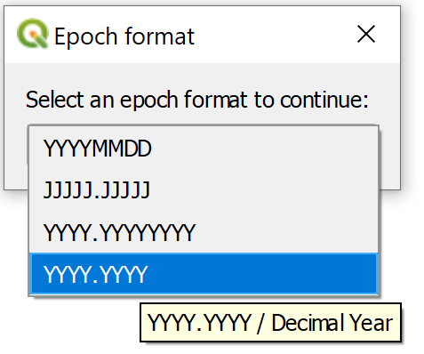
Figure 5. Epoch-format selection.The dates are converted internally into a standardised Modified Julian Date representation for subsequent processing.
Selecting the North component difference
Select the field containing the North displacement component in the NEU reference system.
Selecting the East component difference
Select the field containing the East displacement component in the NEU reference system.
VDA displays the original North and East components and their values expressed relative to the initial epoch, together with graphical representations of both components over time.
 Figure 6. Validation screen showing the selected fields and displacement components.
Figure 6. Validation screen showing the selected fields and displacement components.
Control Buttons
- Analyse Station: Process the selected station.
- Batch Analysis: Analyse the selected stations together. This option is only available when station data are retrieved through the Search Time Series panel.
4. Results
Once displacement vectors are obtained, circular statistical descriptors are computed to evaluate the directional characteristics of the GNSS time series.
Results from Loading Time Series
Two methods are available to analyse horizontal displacements derived from GNSS position time series.:
- Absolute Method:
Each position is compared with the position at the initial epoch or a selected reference epoch. This method highlights long-term directional trends and persistent patterns of horizontal displacement. Definitions of the statistical parameters presented below are provided in a report that can be generated from the Settings panel.
Statistical Results for the Absolute Method
CIRCULAR STATISTICS (AZIMUTHS)
- Central tendency:
- Mean azimuth.
- Mode azimuth.
- Median azimuth.
- Dispersion:
- Discrepancy.
- Length of mean vector.
- Circular variance.
- Circular standard deviation.
- Angular variance.
- Mean angular deviation.
- Angular standard deviation.
- Circular dispersion.
- Von Mises concentration parameter.
- Shape:
- Kurtosis coefficient.
- Skewness coefficient.
- Epoch Interval:
- Initial epoch: Date of the first record.
- Final epoch: Date of the last record.
- Epoch interval: Time interval between consecutive observations.
- Number of interruptions: Number of gaps or discontinuities identified in the time series.
 Figure 7. Absolute-method results.
Figure 7. Absolute-method results.
- Relative method:
Each position is compared with the position at the immediately preceding epoch. This strategy emphasises short-term directional variability and facilitates the detection of anomalies, outliers and offsets. When consecutive observations are separated by more than one day, the displacement magnitude is normalised by the elapsed time to obtain a daily displacement rate for anomaly detection.
The same circular statistical parameters used in the absolute method are calculated here, but they describe the directions of horizontal displacements between consecutive epochs.
- Central tendency:
- Mean azimuth.
- Mode azimuth.
- Median azimuth.
- Dispersion:
- Discrepancy.
- Length of mean vector.
- Circular variance.
- Circular standard deviation.
- Angular variance.
- Mean angular deviation.
- Angular standard deviation.
- Circular dispersion.
- Von Mises concentration parameter.
- Shape:
- Kurtosis coefficient.
- Skewness coefficient.
- Anomalies:
- Detection of anomalies, outliers, and offsets.
- Analysis based on the methodology defined by the NATO Standardisation Agreement (STANAG).
Outputs include:
Confidence multiplier (M). This value is calculated according to the STANAG methodology for samples with fewer than 167 observations. For larger samples, M = 3.5.
Horizontal Standard Deviation. A measure of the variability of horizontal displacement residuals, considering both the East (E) and North (N) components.
Threshold criteria. A residual is flagged as a potential anomaly when its absolute value exceeds the threshold defined by the horizontal standard deviation multiplied by the confidence multiplier (M).
Total anomalies. The number of horizontal displacement variations that exceed the specified detection threshold.
 Figure 8. Relative method results for the Reykjavik station.
Figure 8. Relative method results for the Reykjavik station.
List.
The anomaly list displays observations flagged during the directional analysis. These observations are identified for review and are not automatically removed or corrected (Figure 9). It is possible to generate an analysis report in HTML format.
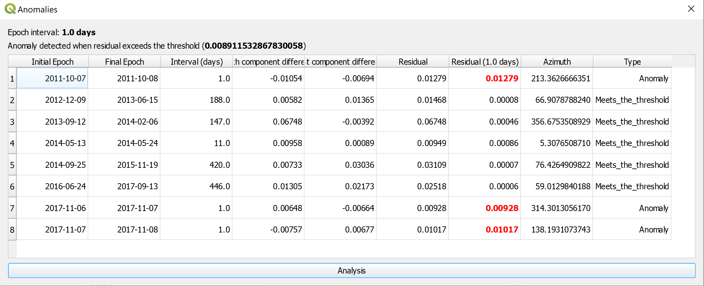
Figure 9. Anomalies list for the Reykjavik station.Visualisation of anomalies
The anomalies visualisation is performed as shown in the QGIS canvas
- Blue arrows Displacement vectors that satisfy the specified threshold criterion.
- Red arrows Displacement vectors flagged as anomalies.
 Figure 10. Anomalies visualisation.
Figure 10. Anomalies visualisation.
Graphical Results
The following graphical results are available for both the absolute and relative methods. The figures show the results for the absolute method.
Circular Graphics
Unit Circle Plots
The unit circle plot represents the distribution of displacement azimuths on a unit circle (Figure 11). The epoch-based version incorporates temporal information, allowing users to examine changes in displacement direction over time.
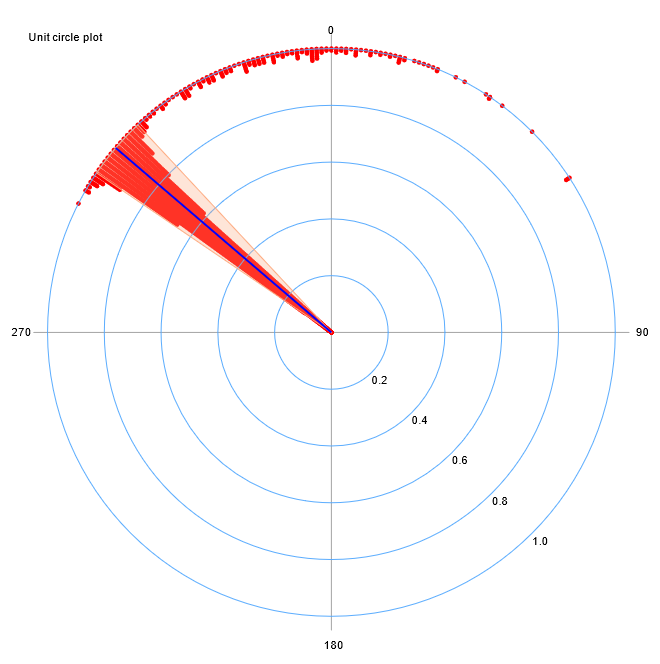
Figure 11. Unit circle plot.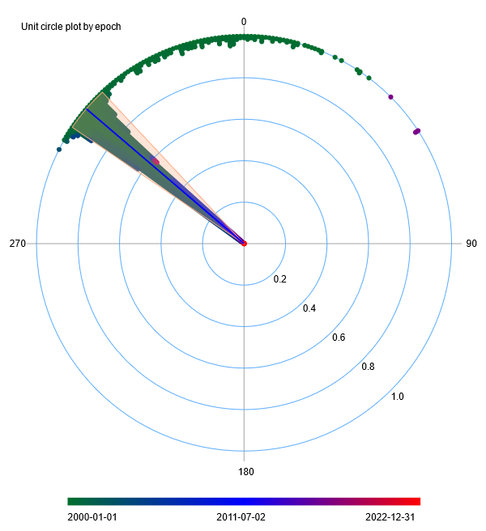
Figure 12. Unit circle plot by epoch.Azimuth with Radial Epoch Encoding
This plot represents displacement azimuths using angular coordinates, while the radial position encodes the observation epoch. It facilitates the examination of directional changes throughout the time series.
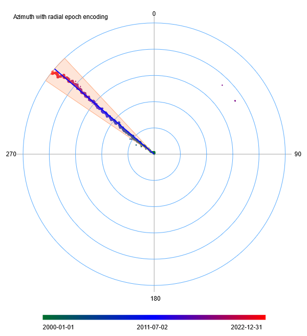
Figure 13. Azimuth with radial epoch encoding.Azimuth–Distance Polar Plots
The azimuth–distance polar plot represents horizontal displacement vectors using azimuth as the angular coordinate and displacement magnitude as the radial coordinate.
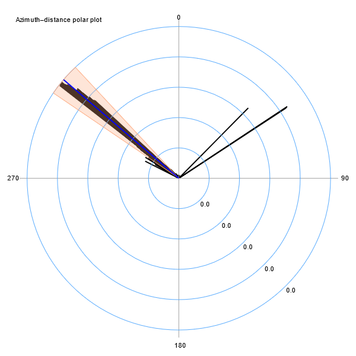
Figure 14. Azimuth–Distance Polar Plot.The epoch-based version additionally incorporates temporal information, allowing users to examine the evolution of displacement magnitude and direction throughout the observation period
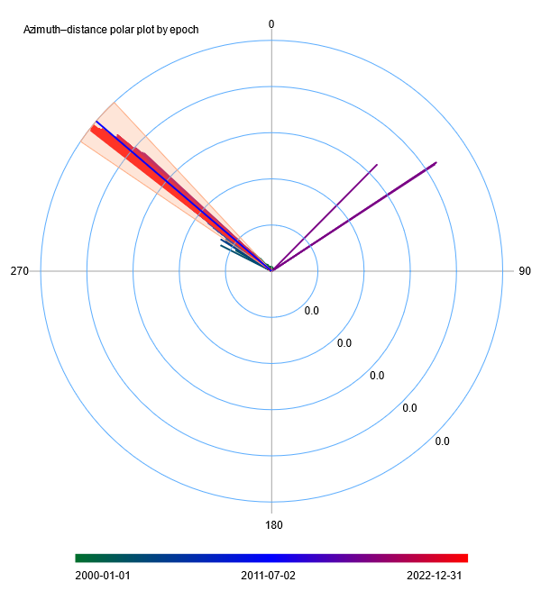
Figure 15. Azimuth–Distance Polar Plot by Epoch.Annual Azimuth–Distance Polar Plot
This plot summarises the annual net horizontal displacement vectors, showing their azimuths and magnitudes. The thickness of each representation indicates the magnitude of the annual net horizontal displacement.
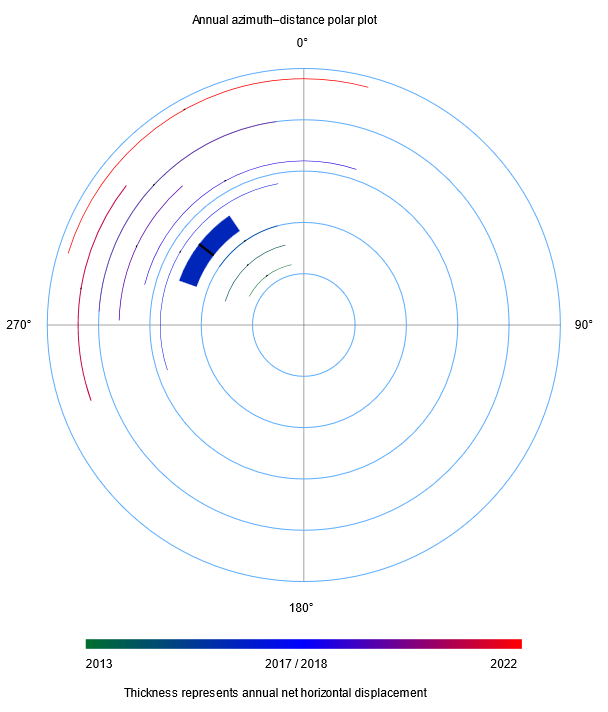
Figure 16. Annual Azimuth–Distance Polar Plot.Circular KDE Plot by Epoch
This plot represents the estimated circular density of displacement azimuths, incorporating temporal information (Figure 17). It facilitates the identification of predominant displacement directions and changes in directional concentration over time.
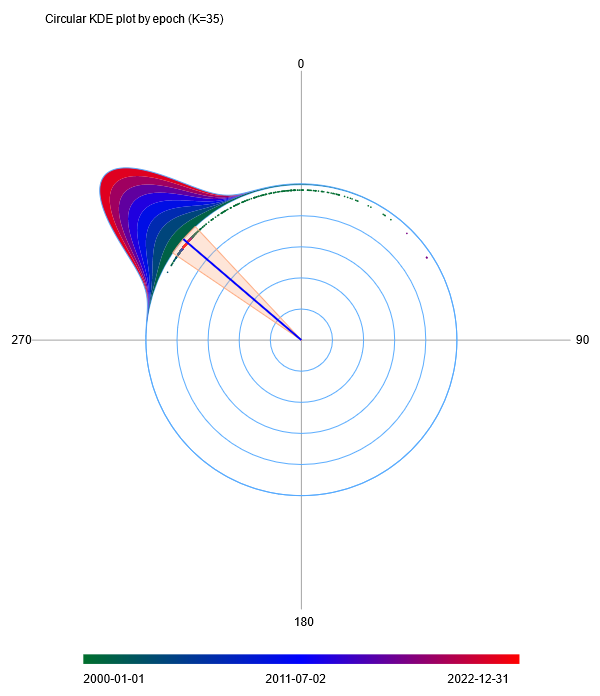
Figure 17. Circular KDE Plot by Epoch.Skewness and Kurtosis Plot
This plot displays circular skewness and kurtosis statistics for the displacement azimuths (Figure 18), providing complementary information about the shape of their directional distribution.
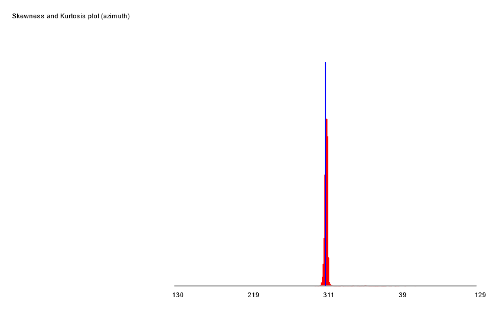
Figure 18. Skewness and kurtosis plot.Uniform Q–Q Plot (Azimuth)
This plot compares the observed azimuth distribution with a theoretical uniform circular distribution (Figure 19). Deviations from the reference pattern may indicate departures from directional uniformity.
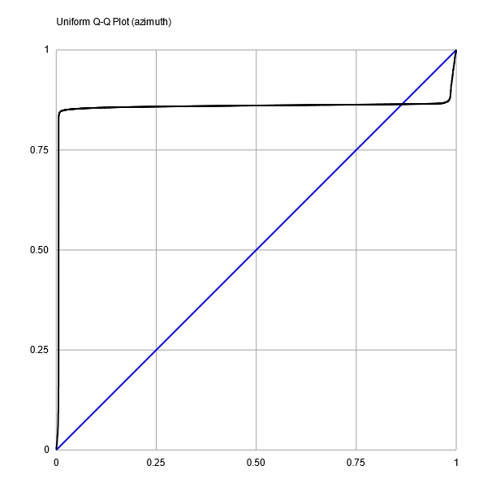
Figure 19. Uniform Q–Q Plot (Azimuth).Linear Graphics
Module histogram
This histogram shows the frequency distribution of horizontal displacement magnitudes (Figure 20), allowing users to examine their variability and identify unusually large displacement values.
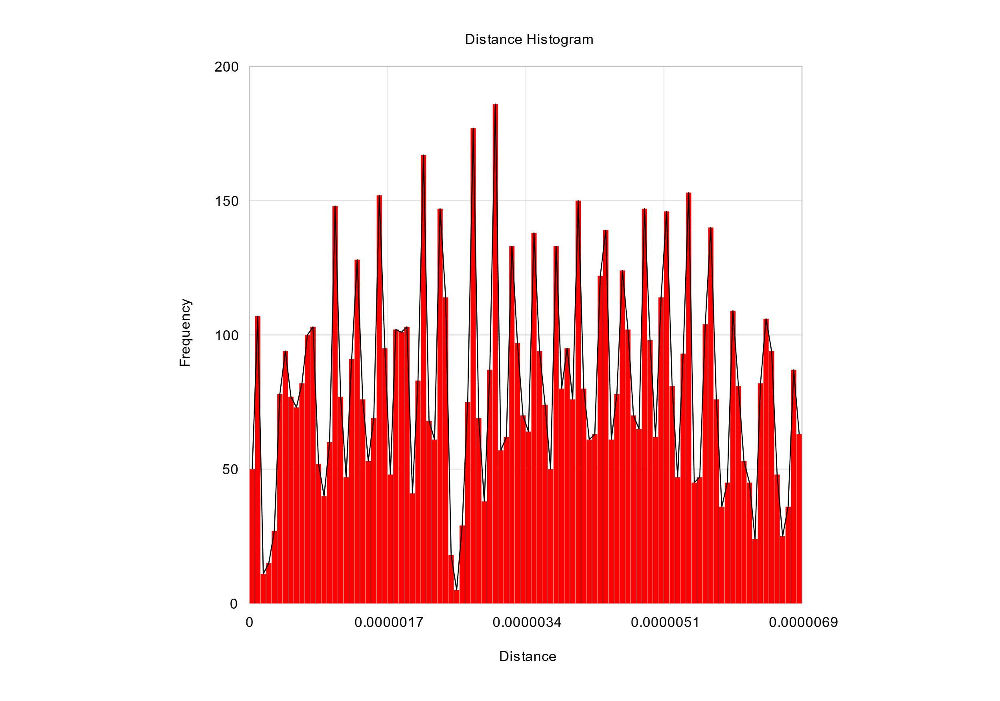
Figure 20. Module Histogram.Temporal Evolution of Azimuth and Distance
This plot shows the evolution of displacement azimuth and magnitude over time (Figure 21), allowing users to examine temporal variations in both directional and linear displacement characteristics.
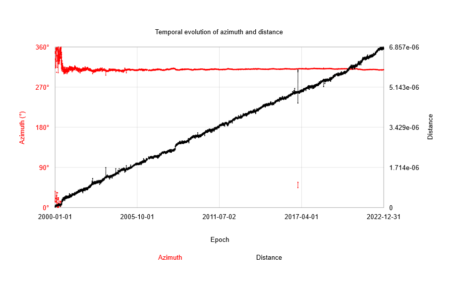
Figure 21. Temporal Evolution of Azimuth and Distance.Export options
- Clipboard Copy the graph to the clipboard.
- Save as SVG Export the graph in Scalable Vector Graphics (SVG) format.
Results from Searching for Time Series
Single-Station Analysis
The results obtained from analysing a single station retrieved from an online data service include the same statistical parameters and graphical outputs as those generated when loading a local time-series file.
Batch Analysis
Batch Analysis allows multiple GNSS stations selected from an online data service to be analysed together. The results are presented in a comparative table, showing the observation epochs and the mean azimuth and circular standard deviation for the selected stations.
The mean azimuth provides a measure of central tendency, while the circular standard deviation describes the dispersion of displacement directions.
 Figure 22. Batch analysis results for multiple GNSS stations.
Figure 22. Batch analysis results for multiple GNSS stations.
By clicking View, the locations of the analysed GNSS stations are displayed on the QGIS map canvas. The corresponding analysis results are available in the layer's attribute table
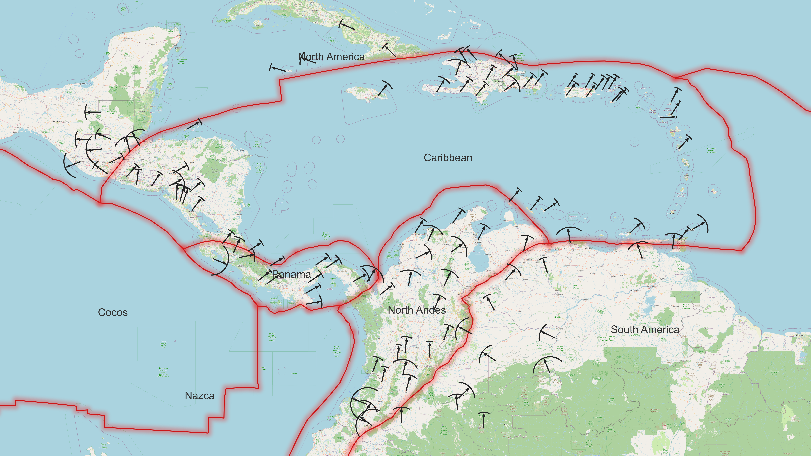
Figure 23. Spatial representation of the analysed GNSS stations in QGIS. Analysis of 110 GNSS stations in South and Central America. Stations were randomly selected from different regions within each country of interest. Arrow directions represent the mean azimuth, and the arcs represent the circular standard deviation. Basemap: OpenStreetMap; tectonic plate boundaries: USGS.5. Data
The Data tab displays all the processed records, including:
- Time (epoch).
- North component difference.
- East component difference.
- Distance.
- Azimuth.
In the Absolute mode, Distance and Azimuth are calculated for each epoch relative to the initial epoch or a selected reference epoch.
In the Relative mode, Distance and Azimuth are calculated for each epoch relative to the preceding epoch.
The processed data can be exported in CSV format by clicking the “…” button.
 Figure 25. Data menu interface.
Figure 25. Data menu interface.
6. Settings
Graphic Settings
The following graphical parameters can be configured:
- Number of rings and sectors: Configure the radial and angular divisions of circular plots.
- Kappa and time bands: Configure the smoothing parameter and temporal grouping used in the circular KDE plot by epoch.
- Opacity: Adjust the transparency of graphical elements.
- Colours: Customise the colours of rings, sectors, points, lines, mean direction, deviation and density map.
Report Settings
The report options include:
- The report date.
- Project description.
- Graphics copied from the clipboard .
- Data tables.
- The report can be generated in HTML format
 Figure 26. Graphic and report settings in GVDA..
Figure 26. Graphic and report settings in GVDA..
7. Computational performance
The batch-processing performance of the GNSS Vector Direction Analysis (GVDA) QGIS plugin was evaluated on a desktop computer equipped with an Intel Core i5-2400 CPU operating at 3.10 GHz and 16 GB of RAM. The evaluation used GNSS station time series from three data sources (EPOS, NGL, and JPL) and eight batch sizes ranging from 2 to 100 stations. Processing time is reported in decimal minutes.
Processing time increased with batch size for all three data sources. For batches of 20 stations, elapsed times ranged from 0.29 to 0.45 min; at 60 stations, they ranged from 1.17 to 2.44 min. At the largest tested batch size of 100 stations, the elapsed times were 4.82 min for EPOS, 4.76 min for NGL, and 4.94 min for JPL, yielding an arithmetic mean of 4.84 min across the three sources. Thus, under the tested conditions, GVDA processed 100 stations in less than 5 min for each data source.
| Stations | EPOS | NGL | JPL | Mean |
|---|---|---|---|---|
| 2 | 0.03 | 0.03 | 0.04 | 0.03 |
| 5 | 0.07 | 0.08 | 0.11 | 0.09 |
| 10 | 0.14 | 0.16 | 0.20 | 0.17 |
| 20 | 0.45 | 0.29 | 0.44 | 0.39 |
| 40 | 0.71 | 0.53 | 1.12 | 0.79 |
| 60 | 2.29 | 1.17 | 2.44 | 1.97 |
| 80 | 3.30 | 3.06 | 3.27 | 3.21 |
| 100 | 4.82 | 4.76 | 4.94 | 4.84 |
The relative ordering of the data sources varied with batch size. For example, NGL had the shortest recorded time at 60 stations, whereas the three measurements differed by only 0.18 min (approximately 11 s) at 100 stations. These differences should be interpreted as descriptive results for the tested batches rather than as intrinsic performance differences between providers. Station count alone does not characterise the computational workload: batches with the same number of stations may contain different numbers of GNSS observations
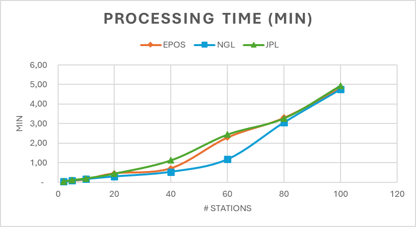
Figure 27. Elapsed processing time for GVDA batch analysis of GNSS station time series from EPOS. NGL. and JPL. Tests were conducted on a desktop computer with an Intel Core i5-2400 CPU at 3.10 GHz and 16 GB of RAM. Batch sizes ranged from 2 to 100 stations.Software requirements and dependencies:
The GNSS Vector Direction Analysis (GVDA) plugin declares compatibility with QGIS Desktop versions 3.30–3.44. It uses PyQGIS for spatial operations and background tasks and the Qt bindings provided by QGIS (PyQt) for its graphical interface. Performance tests were conducted on Windows 10 (build 19045) using QGIS 3.44.4 (Solothurn). installed through OSGeo4W. with Python 3.12.12.
The two principal numerical dependencies are NumPy 1.26.4 and SciPy 1.13.0. NumPy is used in the optimised calculation of circular-median scores. while SciPy provides statistical and interpolation routines. GVDA also uses pandas 2.3.1 to handle GNSS station time series. Matplotlib 3.10.0 to display plots within the QGIS interface. and Pillow 11.1.0 for image handling.
All required Python libraries were available in the OSGeo4W environment used for testing; no additional Python packages had to be installed separately. The versions reported here describe the tested configuration. not minimum dependency requirements or verification of every QGIS release in the declared compatibility range.
References:
Fisher, N. I. (1993). Statistical Analysis of Circular Data. Cambridge University Press. https://doi.org/10.1017/CBO9780511564345
Mardia, K., & Jupp, P. (2000). In Directional Statistics. https://doi.org/10.1002/9780470316979